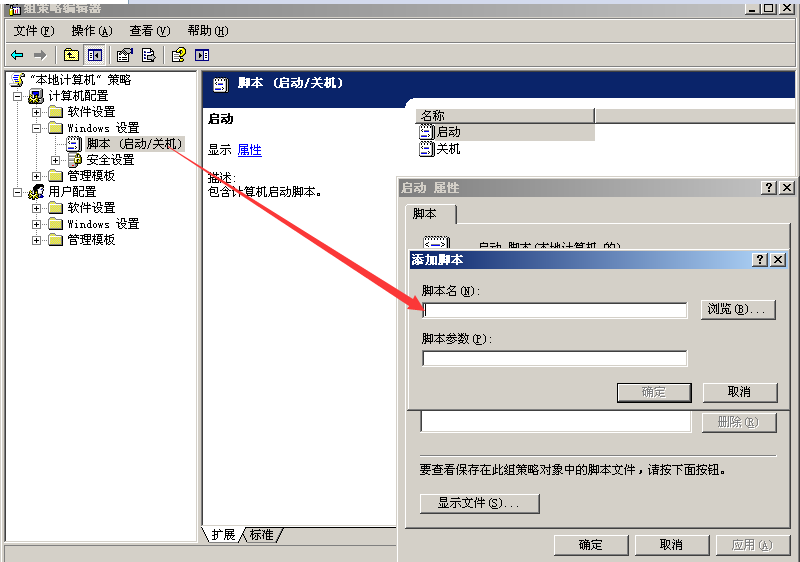

第1篇：window入侵排查
0x00 前言
当企业发生黑客入侵、系统崩溃或其它影响业务正常运行的安全事件时，急需第一时间进行处理，使企业的网络信息系统在最短时间内恢复正常工作，进一步查找入侵来源，还原入侵事故过程，同时给出解决方案与防范措施，为企业挽回或减少经济损失。
常见的应急响应事件分类：
web入侵：网页挂马、主页篡改、Webshell
系统入侵：病毒木马、勒索软件、远控后门
网络攻击：DDOS攻击、DNS劫持、ARP欺骗
针对常见的攻击事件，结合工作中应急响应事件分析和解决的方法，总结了一些Window服务器入侵排查的思路。
0x01 入侵排查思路
一、检查系统账号安全
1、查看服务器是否有弱口令，远程管理端口是否对公网开放。
- 检查方法：据实际情况咨询相关服务器管理员。
2、查看服务器是否存在可疑账号、新增账号。
- 检查方法：打开 cmd 窗口，输入
lusrmgr.msc命令，查看是否有新增/可疑的账号，如有管理员群组的（Administrators）里的新增账户，如有，请立即禁用或删除掉。
- 检查方法：打开 cmd 窗口，输入
3、查看服务器是否存在隐藏账号、克隆账号。
检查方法：
a、打开注册表 ，查看管理员对应键值。
b、使用D盾_web查杀工具，集成了对克隆账号检测的功能。

4、结合日志，查看管理员登录时间、用户名是否存在异常。
检查方法：
a、Win+R打开运行，输入“eventvwr.msc”，回车运行，打开“事件查看器”。
b、导出Windows日志--安全，利用Log Parser进行分析。

二、检查异常端口、进程
1、检查端口连接情况，是否有远程连接、可疑连接。
检查方法：
a、netstat -ano 查看目前的网络连接，定位可疑的ESTABLISHED
b、根据netstat 定位出的pid，再通过tasklist命令进行进程定位 tasklist | findstr “PID”

2、进程
检查方法：
a、开始--运行--输入msinfo32，依次点击“软件环境→正在运行任务”就可以查看到进程的详细信息，比如进程路径、进程ID、文件创建日期、启动时间等。
b、打开D盾_web查杀工具，进程查看，关注没有签名信息的进程。
c、通过微软官方提供的 Process Explorer 等工具进行排查 。
d、查看可疑的进程及其子进程。可以通过观察以下内容：
没有签名验证信息的进程 没有描述信息的进程 进程的属主 进程的路径是否合法 CPU或内存资源占用长时间过高的进程
3、小技巧：
a、查看端口对应的PID： netstat -ano | findstr “port”
b、查看进程对应的PID：任务管理器--查看--选择列--PID 或者 tasklist | findstr “PID”
c、查看进程对应的程序位置：
任务管理器--选择对应进程--右键打开文件位置
运行输入 wmic，cmd界面 输入 process
d、tasklist /svc 进程--PID--服务
e、查看Windows服务所对应的端口： %system%/system32/drivers/etc/services（一般%system%就是C:\Windows）
三、检查启动项、计划任务、服务
1、检查服务器是否有异常的启动项。
- 检查方法：
a、登录服务器，单击【开始】>【所有程序】>【启动】，默认情况下此目录在是一个空目录，确认是否有非业务程序在该目录下。 b、单击开始菜单 >【运行】，输入 msconfig，查看是否存在命名异常的启动项目，是则取消勾选命名异常的启动项目，并到命令中显示的路径删除文件。 c、单击【开始】>【运行】，输入 regedit，打开注册表，查看开机启动项是否正常，特别注意如下三个注册表项： HKEY_CURRENT_USER\software\micorsoft\windows\currentversion\run HKEY_LOCAL_MACHINE\Software\Microsoft\Windows\CurrentVersion\Run HKEY_LOCAL_MACHINE\Software\Microsoft\Windows\CurrentVersion\Runonce 检查右侧是否有启动异常的项目，如有请删除，并建议安装杀毒软件进行病毒查杀，清除残留病毒或木马。
d、利用安全软件查看启动项、开机时间管理等。
e、组策略，运行gpedit.msc。

2、检查计划任务
- 检查方法：
a、单击【开始】>【设置】>【控制面板】>【任务计划】，查看计划任务属性，便可以发现木马文件的路径。
b、单击【开始】>【运行】；输入 cmd，然后输入at，检查计算机与网络上的其它计算机之间的会话或计划任务，如有，则确认是否为正常连接。
3、服务自启动
- 检查方法：单击【开始】>【运行】，输入services.msc，注意服务状态和启动类型，检查是否有异常服务。
四、检查系统相关信息
1、查看系统版本以及补丁信息
- 检查方法：单击【开始】>【运行】，输入systeminfo，查看系统信息
2、查找可疑目录及文件
检查方法：
a、 查看用户目录，新建账号会在这个目录生成一个用户目录，查看是否有新建用户目录。
Window 2003 C:\Documents and Settings
Window 2008R2 C:\Users\
b、单击【开始】>【运行】，输入%UserProfile%\Recent，分析最近打开分析可疑文件。
c、在服务器各个目录，可根据文件夹内文件列表时间进行排序，查找可疑文件。
五、自动化查杀
病毒查杀
- 检查方法：下载安全软件，更新最新病毒库，进行全盘扫描。
webshell查杀
- 检查方法：选择具体站点路径进行webshell查杀，建议使用两款webshell查杀工具同时查杀，可相互补充规则库的不足。
六、日志分析
系统日志
分析方法：
a、前提：开启审核策略，若日后系统出现故障、安全事故则可以查看系统的日志文件，排除故障，追查入侵者的信息等。
b、Win+R打开运行，输入“eventvwr.msc”，回车运行，打开“事件查看器”。
C、导出应用程序日志、安全日志、系统日志，利用Log Parser进行分析。
WEB访问日志
分析方法：
a、找到中间件的web日志，打包到本地方便进行分析。
b、推荐工具：Window下，推荐用 EmEditor 进行日志分析，支持大文本，搜索效率还不错。
Linux下，使用Shell命令组合查询分析
0x02 工具篇
病毒分析 ：
PCHunter：http://www.xuetr.com
Process Explorer：https://docs.microsoft.com/zh-cn/sysinternals/downloads/process-explorer
processhacker：https://processhacker.sourceforge.io/downloads.php
autoruns：https://docs.microsoft.com/en-us/sysinternals/downloads/autoruns
病毒查杀：
卡巴斯基：http://devbuilds.kaspersky-labs.com/devbuilds/KVRT/latest/full/KVRT.exe
（推荐理由：绿色版、最新病毒库）
大蜘蛛：http://free.drweb.ru/download+cureit+free
（推荐理由：扫描快、一次下载只能用1周，更新病毒库）
火绒安全软件：https://www.huorong.cn
病毒动态：
CVERC-国家计算机病毒应急处理中心：http://www.cverc.org.cn
微步在线威胁情报社区：https://x.threatbook.cn
火绒安全论坛：http://bbs.huorong.cn/forum-59-1.html
爱毒霸社区：http://bbs.duba.net
在线病毒扫描网站：
http://www.virscan.org //多引擎在线病毒扫描网 v1.02，当前支持 41 款杀毒引擎
https://habo.qq.com //腾讯哈勃分析系统
https://virusscan.jotti.org //Jotti恶意软件扫描系统
http://www.scanvir.com //针对计算机病毒、手机病毒、可疑文件等进行检测分析
webshell查杀：
D盾_Web查杀：http://www.d99net.net/index.asp
河马webshell查杀：http://www.shellpub.com
深信服Webshell网站后门检测工具：http://edr.sangfor.com.cn/backdoor_detection.html